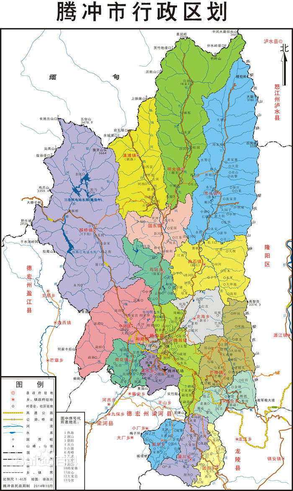
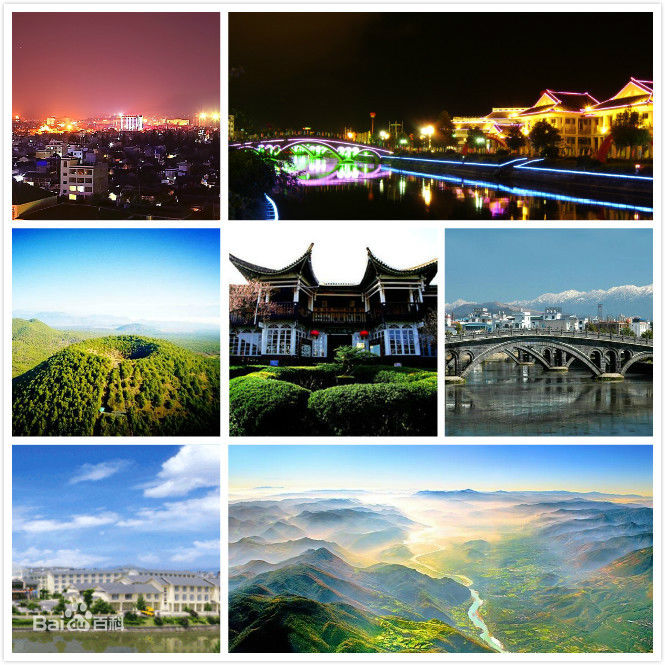
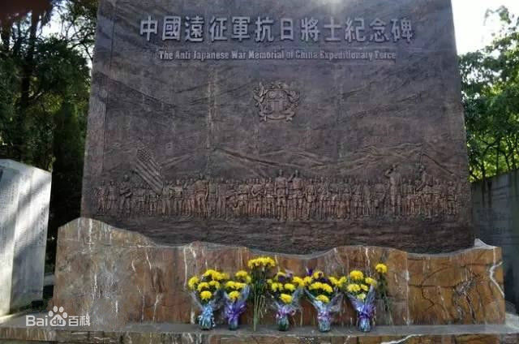

极边第一城
腾冲隶属云南省，由保山市代管的县级市，位于云南省西南部，地处保山市西部，东与隆阳区相连，南与龙陵县、梁河县接壤，西与盈江县、缅甸联邦共和国毗连，东北与怒江傈僳族自治州泸水市相邻。市区距省会昆明606公里，距缅甸密支那200公里，距印度雷多602公里，是中国通向南亚、东南亚的重要门户和节点。 截至2014年，腾冲市幅员面积5845平方公里，国境线长148.075公里，辖11镇、7乡，2014年，总人口（常住人口）65.99万人；2014年，实现地区生产总值（GDP）133.4亿元。 腾冲是著名的侨乡、文献之邦和翡翠集散地，也是省级历史文化名城。腾冲在西汉时称滇越，大理国中期设腾冲府。由于地理位置重要，历代都派重兵驻守，明代还建造了石头城，称之为“极边第一城”。[1] 腾冲主要旅游景区有火山群国家公园、叠水河瀑布、北海湿地保护区、国殇墓园、艾思奇故居等。 2016年12月7日，腾冲被列为第三批国家新型城镇化综合试点地区。 美丽图景
宝剑双蛟龙，雪花照芙蓉。精光射天地，雷腾不可冲。
逝去的硝烟